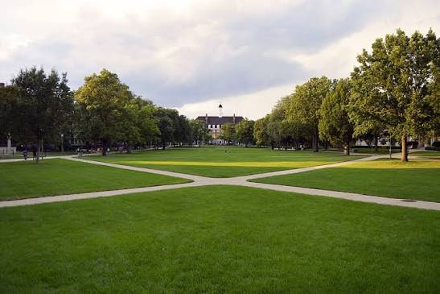

Life outside the classroom.
Nine residence halls, over 140 registered student organizations, and a dining hall that seats 900 at once. Most first-year students live within a ten-minute walk of Founders Hall.

Nine residence halls.
Housing is guaranteed for first-year and second-year students. Upperclass and graduate students enter a lottery each spring.
| Hall | Assigned To | Capacity | Style |
|---|---|---|---|
| Knope Hall | First-Year | 420 | Traditional double |
| Meagle Hall | First-Year | 380 | Traditional double |
| Ludgate Hall | First-Year | 300 | Traditional double |
| Wyatt Tower | Sophomore & up | 260 | Suite-style |
| Haverford Commons | Sophomore & up | 340 | Apartment-style |
| Perkins Hall | Sophomore & up | 290 | Suite-style |
| Gergich Hall | Upperclass | 180 | Apartment-style |
| Dwyer Hall | Upperclass, athletics-affiliated | 150 | Apartment-style |
| Traeger House | Graduate students | 220 | Studio apartments |
Hall names and figures are illustrative, shown for the Adversary Wars simulation.
140 registered organizations, six categories.
- Academic & Honor Societies32
- Service & Advocacy28
- Cultural & Identity24
- Club Sports22
- Performing Arts18
- Media & Publications16
One dining hall, four kitchens.
The Founders Dining Hall seats 900 students at once across four stations: a grill, a wok line, a made-to-order salad bar, and a rotating international menu. Three smaller cafes in the library, the student union, and the Engineering annex stay open past midnight during exam weeks.